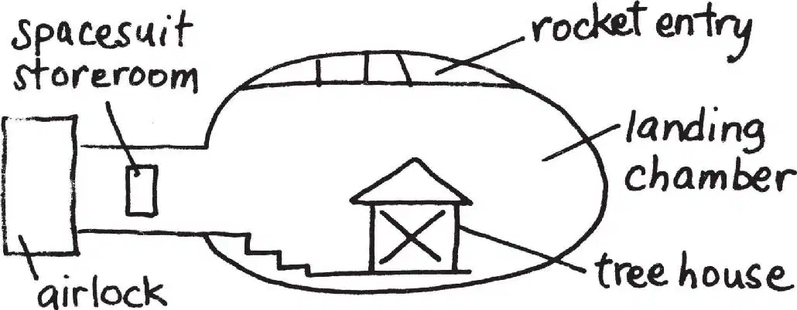

Jack opened his eyes.
He looked out the window. The tree house had landed inside a large white room.
“What kind of training place is this?” asked Annie.
“I don’t know,” said Jack.
The room was round. It had no windows. It had white floors and a curved wall lit by bright lights.
“Hello!” Annie called.
There was no answer.
Where were all the astronauts and space scientists? Jack wondered.
“There’s nobody here,” said Annie.
“How do you know?” said Jack.
“I just feel it,” said Annie.
“We’d better find out where we are,” said Jack.
He looked at the page in the moon book. He read the words below the picture of the dome.
A moon base was built on the moon in the year 2031. The top of the dome slides open to let spacecrafts enter and leave.
“Oh, man—” Jack whispered.
“What’s wrong?” said Annie.
Jack’s heart pounded with excitement. He could hardly speak. “We’ve landed inside a moon base,” he said.
“So…?” said Annie.
“So the moon base is on the moon!” said Jack.
Annie’s eyes widened. “We’re on the moon?” she asked.
Jack nodded. “The book says the moon base was built in the year 2031,” he said. “So this book was written after that! Which means this book is from the future!”
“Oh, wow,” said Annie. “Morgan must have gone forward in time to borrow it from a future library.”
“Right,” said Jack. “And now we’re in the future, on the moon.”
Squeak, squeak!
Annie and Jack looked at Peanut. The mouse was running around in circles.
“Poor Peanut,” said Annie.
She tried to pick the mouse up. But Peanut hid behind the mango on the letter M.
“Maybe she’s nervous about being on the moon,” said Annie.
“She’s not the only one,” said Jack. He let out a deep breath, then he pushed his glasses into place.
“So what’s a moon base?” asked Annie.
Jack looked at the book. He read aloud:
When scientists visit the moon for short periods, they eat and sleep in the moon base.
“A space motel!” said Annie.
“I guess,” said Jack. He read more:
The small base has a landing chamber and a room for storing spacesuits. Air and temperature controls make breathing possible.
“So that’s why we can breathe,” Jack said.
“Let’s explore,” said Annie. “We have to find the fourth thing for Morgan.”
“No, first we should study this map,” said Jack. He pulled out his notebook.
“You study it,” said Annie.
Jack copied the map. Then he drew in the tree house.

“Okay,” he said. He pointed at the X in his drawing. “We’re here.”
Jack looked up. Annie was gone.
“Oh, brother,” Jack said. As usual, she had left without him. Before they could even make a plan.
Jack put the moon book and pencil into his pack. Carrying his notebook and backpack, he started out the window.
Squeak! Squeak!
Jack looked back at Peanut. The mouse was running back and forth on the M.
“Stay here and be safe,” said Jack. “We’ll be back soon.”
Jack swung himself over the window sill. His feet touched the floor of the landing chamber.
“Annie!” he called.
There was no answer.
Jack looked at his diagram.
It showed only one way to go. Jack walked along the curved white wall to the stairs.
He climbed the steps to a hallway.
“Jack—hurry!” Annie was at the end of the hallway, standing in the airlock. She peered out a window in a giant door.
Jack hurried toward her. Annie stepped aside so he could look out the window, too.
“Oh, man,” said Jack. What he saw took his breath away.
He stared at a rocky gray land. The land was filled with giant craters and tall mountains. The sun was shining. But the sky was ink-black!
“Say hi to the moon,” Annie said softly.